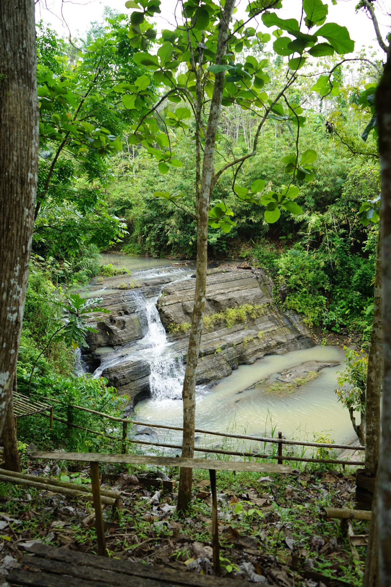
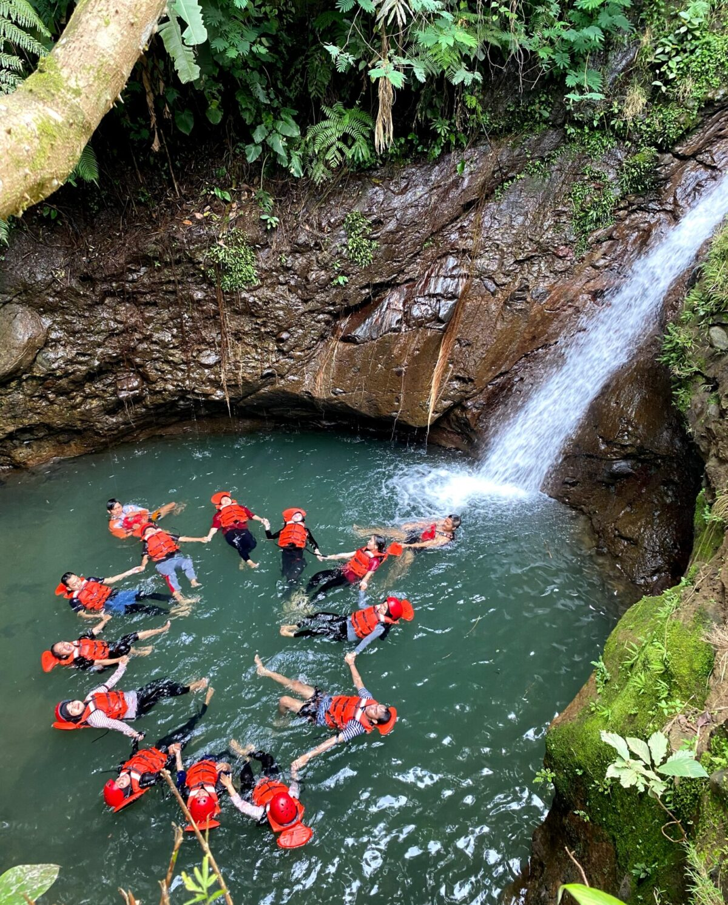
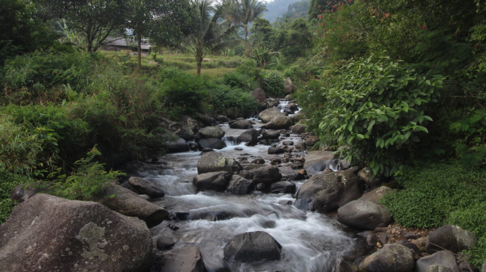
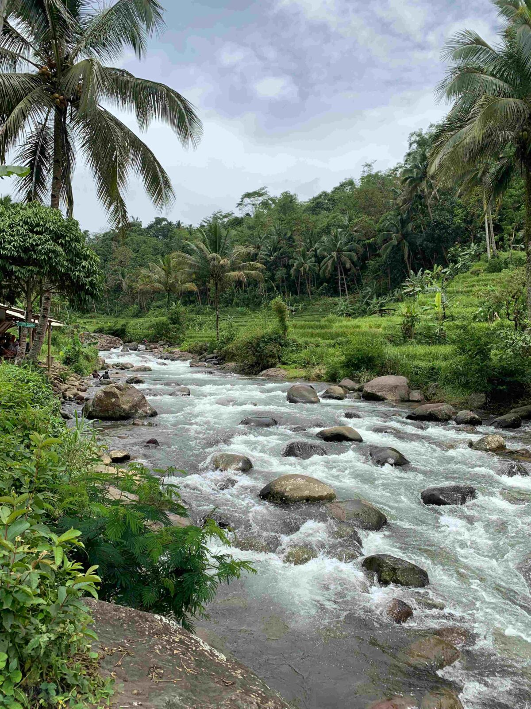
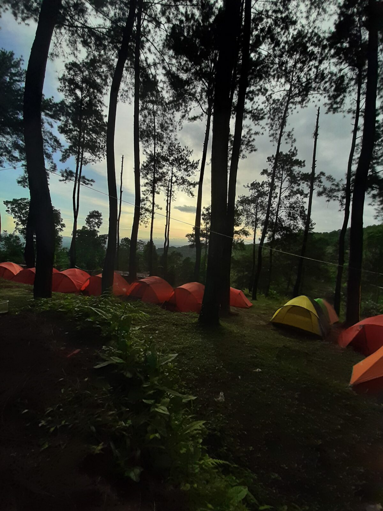
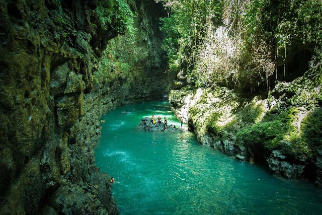
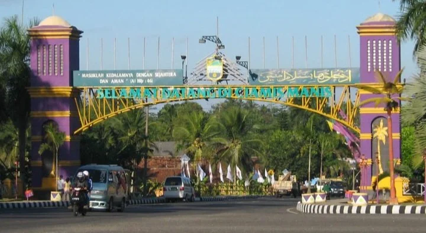

Ciamis adalah sebuah kabupaten yang terletak di Provinsi Jawa Barat, Indonesia.
Ibu kotanya juga bernama Ciamis. Kabupaten ini dikenal dengan
suasana yang
masih asri, alamnya yang indah, dan kental dengan budaya Sunda.
Berikut ini destinasi pilihan terbaik ayng dapat dikunjungi.
Berikut ini beberapa Gambar Destinasi.






Berikut ini Deskripsi Singkat Tentang Ciamis

Ciamis adalah salah satu kabupaten yang terletak di Provinsi Jawa Barat, Indonesia. Ibu kotanya juga bernama Ciamis, dan lokasinya berada di bagian timur Jawa Barat.
Kabupaten ini dikenal punya suasana yang adem, asri, dan masyarakatnya ramah-ramah banget. Cocok lah buat lu yang suka ketenangan, jauh dari hiruk-pikuk kota besar Dulu, wilayah Kabupaten Ciamis tuh luas banget karena masih mencakup daerah Pangandaran, yang punya banyak pantai. Tapi sejak tahun 2012, Pangandaran resmi memisahkan diri dan jadi kabupaten sendiri. Walaupun udah "cerai", Ciamis tetap punya daya tarik tersendiri yang nggak kalah keren.